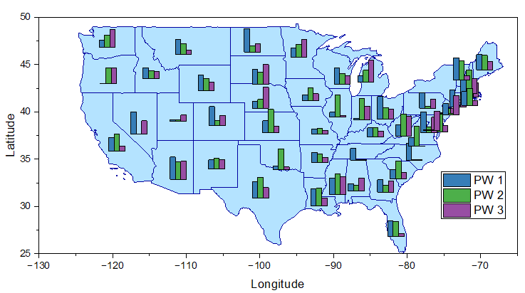
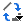

棒グラフマップ
Bar-Map
- 
必要なデータ
棒グラフマップを作成するにはX列と3つ以上のY列を選択します。最初の2列（XとY）は、各棒グラフの位置を決めるものです。ほかのY列は、棒グラフを行ごとに作成するために使用されます。つまり、各行の2番目のY列のすべてのY値で棒グラフが作成され、最初のXY列データの位置に配置されます。
グラフ作成
データを選択します。
メニューからを選択します。
テンプレート
BarMap.OTPU （Originのプログラムフォルダにインストールされています）。
ノート
棒グラフマップはXYデータを用いて棒の場所を決定するグラフです。それぞれの棒グラフはY列にある１行のデータごとに作成されます。
- 棒のサイズを変更するには、作図の詳細ダイアログのマップタブを使用します。
- 積み上げ棒グラフマップを作成するには、作図の詳細ダイアログ詳細ダイアログのマップタブで積み上げにチェックを付けます。さらに、パーセントに正規化にチェックをつけて、積み上げ棒グラフを指定された最大高さで正規化できます。
- 各棒グラフの棒間の間隔を設定するには、作図の詳細ダイアログの間隔タブに移動します。
- 棒グラフマップと円グラフマップでグラフタイプを切り替えるには、
- 1つの棒/円グラフをクリックしてから、ミニツールバーのプロットを変更ボタンをクリックして、円グラフマップまたは棒グラフマップを選択します。
- 棒グラフ/円グラフをダブルクリックして、作図の詳細ダイアログを開きます。棒/円グラフを選択した状態で、作図形式ドロップダウンリストから円グラフマップまたは棒グラフマップを選択します。